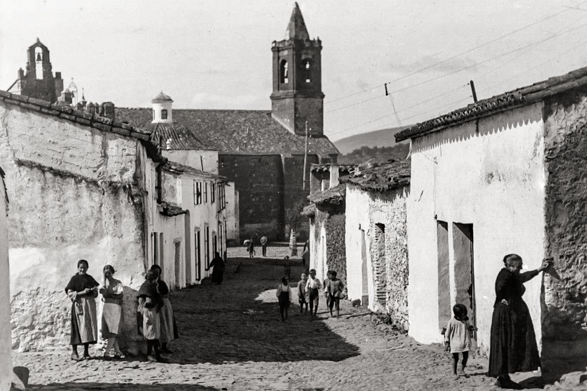
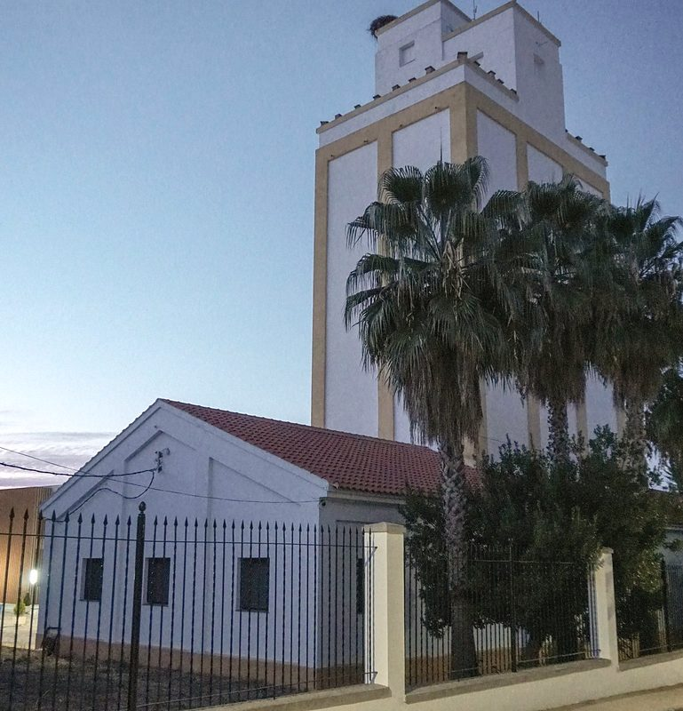
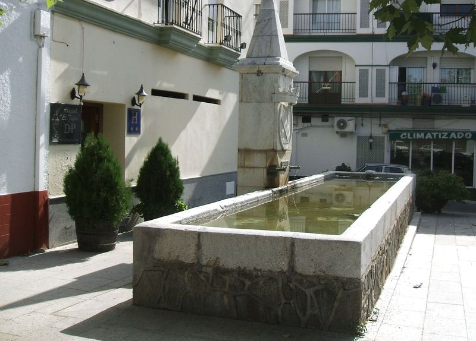
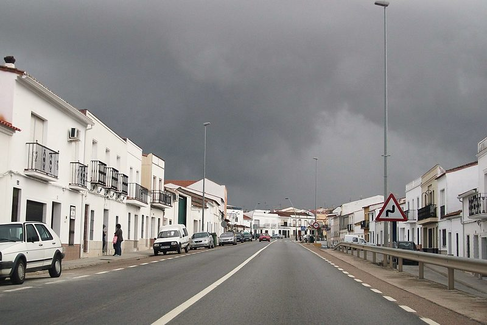
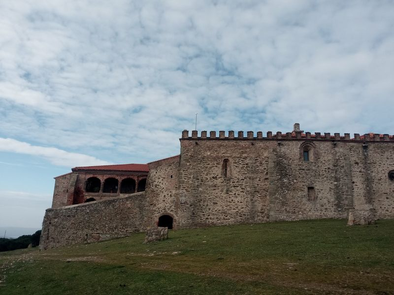
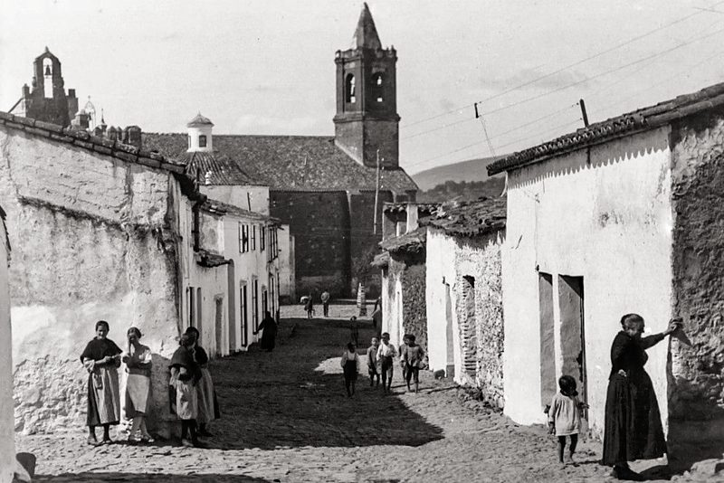

The town
In the Sierra Morena, on the Vía de la Plata and at the gateway to Extremadura: a land of dehesa pasture, Iberian ham and painters.

What to see
-

Ham Museum (Museo del Jamón)
Opened in 2012 at the entrance to the town from Seville. It tells the story of the dehesa, the Iberian pig and the traditional pig slaughter (matanza); it ends in a courtyard with the dehesa in miniature.
-

Mycology Museum (Museo Micológico)
The first in Extremadura, in the old grain silo: three rooms on the fungi and mushrooms of Tentudía.
Photo: Vanbasten 23 · CC BY-SA 3.0
-

Pilar de la Reverencia
A granite drinking trough from 1911, right in the middle of the main road through the town. A witness to a century of travellers.
Photo: Marbregal · CC BY-SA 3.0
-

Paseo de Extremadura
The old N-630, the road of the Vía de la Plata, which splits the town in two and brings together shops and hostels.
Photo: Feranza · CC BY-SA 3.0
-
Cocedero de Altramuces de La Cabra (lupin-cooking site)
A Site of Cultural Interest since 2012: vegetable garden, water wheel, ponds and a lupin-cooking site from the early 20th century, on the Calera de León road.
-

Monastery of Tentudía
In the municipality of Calera de León, 10 km along the Ruta de Tentudía. The Virgen de Tentudía is the patron saint of Monesterio.
Photo: 80kmh · CC BY 4.0
-

Church of San Pedro Apóstol
From the 15th century, with Roman remains on the façade, an altarpiece of 1639 and the processional cross by Francisco de Alfaro (1597).
Photo: Fernando Garrorena Arcas (1901-1945) · Dominio público
The municipality on a map
Places on the map
- Church of San Pedro Apóstol
- Pilar de la Reverencia
- Chapel of the Virgen de Tentudía
- Castillo de las Torres
How to read it
- Municipal boundary (dashed line)
- The town (shaded area)
- Roads (thick line): A-66, BA-067, BA-094, EX-103, EX-318 y N-630
- Routes (dotted line): Camino de Marmolejo al Santuario de la Virgen de la Cabeza, Ruta de los Ecosistemas Forestales, Vía de la Plata hiking - 01 Sevilla to Merida, EV1 y EV1
- Numbered circle: a place in the list
- Scale: the bar at the bottom is 10 km
- Inset: the town enlarged; its bar is 250 m
- Thin line with a dot: the exact spot, when the number has been moved aside to keep it readable
History
The Vía de la Plata has run through Monesterio for two thousand years. In Roman times the town was called Curiga: this is attested by an inscription, now in the Centro de Interpretación de los Caminos Jacobeos (the Santiago pilgrim routes interpretation centre), and by the Roman columns, ashlar blocks and cornices on the façade of the church.
After the capture of Montemolín, around 1247, the area passed to the Order of Santiago, which held it until 1875. By the 14th century Monesterio was already an encomienda of the Order.
Around 1573 the Crown separated it from the Order and sold it to Seville. In 1632 the banker Octavio Centurión was named Marquis of Monesterio: the chequered band on the coat of arms comes from his lineage.
The town grew in the 19th and 20th centuries around the main road, with its inns. The dehesa of holm oaks and cork oaks, of about 16,000 hectares, and the Iberian pig industry are now its engine.
Heritage
- Church of San Pedro ApóstolFirst mentioned in the 15th century. Rib vaulting over the high altar, a Mannerist altarpiece by Jerónimo Velázquez (1639), an 18th-century Rosary chapel and paintings by Eduardo Acosta. Open to visit during Mass times.
- Chapel of the Virgen de TentudíaIn a former warehouse of the La Cruz del Pilar flour mill (1906); a place of worship since the 1960s, restored in 1999. Open to visit during Mass times.
- Cocedero de Altramuces de La Cabra (lupin-cooking site)A Site of Cultural Interest and Place of Ethnological Interest (Decree 68/2012). Vegetable garden, water wheel, channel, ponds, lupin-cooking site and gardener's house, at km 3.25 of the Calera de León road.
- La Cabra dolmenA passage grave more than 5,000 years old, with a mound 22 metres across, beside the Vereda de la Plata. Nearby are another megalith at La Cabra Baja and a Visigothic tomb at Hoya Montuosa.
- Castillo de las TorresThe ruins of a late medieval fortified house with three round towers, beside the Camino de la Plata and the border with Andalusia.
- The five crossesThose of El Barrio, El Puerto, La Candelaria, the Gorda or de la Trocha, and El Llano. Those of El Barrio and El Puerto reuse Roman stones.
- Pilares (drinking troughs)The Pilar de la Reverencia (1911), the Pilar Viejo, the oldest, and the granite Pilar del Llano.
- El MojónA native sport: two teams of six throw «rebolos», rounded stones, to knock down the opposing team's mojón, a wooden block about 50 cm tall.
Festivals
January
- Three Kings Parade (Cabalgata de Reyes)5 January
February
- Traditional Iberian Pig Slaughter (Matanza)In winter
- CarnivalFebruary or March
March
No festivals this month
April
- Holy WeekMarch or April
May
- Cruces de Mayo (May Crosses)May
- Pilgrimage of San Isidro (Romería de San Isidro)From 15 May, for several days, in the Pradera del Culebrín
June
- Jamón & Blues FestivalLate June
July
No festivals this month
August
- Ham-Carving CompetitionAugust, in the Plaza del Pueblo
- Feria del Emigrante (fair for those who left the town) Main festivalAround 15 August
September
- Pilgrimage of the Virgen de Tentudía8 September
- Fair, Festivals and Ham Day (Feria y Fiestas y Día del Jamón) Main festivalAround 8 September; Ham Day is on the second Saturday. Festival of Tourist Interest in Extremadura
October
No festivals this month
November
- Mushroom Days (Jornadas Micológicas)November
December
No festivals this month
Food and drink
Dishes
- Monesterio Iberian ham (jamón ibérico)
- Migas (fried breadcrumbs)
- Revoltillos con morcilla lustre (scrambled eggs with blood sausage)
- Patatas con espinazo (potatoes with pork backbone)
- Tomatada (tomato-based dish)
- Gazpacho (cold tomato soup)
- Sopones (a kind of soup)
- Almorraque
- Sopas de tomate con higos (tomato soup with figs)
- Caldereta de venado (venison stew)
- Arroz con conejo o liebre (rice with rabbit or hare)
- Guarrito frito o en caldereta (young pig, fried or stewed)
Sweets
- Gañotes (fried pastries)
- Virutas
- Flores (fried flower-shaped pastries)
- Roscos (ring-shaped sweets)
Notable people
Eduardo Naranjo
born 1944
A painter of magic realism. Medalla de Extremadura (Extremadura Medal) in 1991. His «Cerdo universal» is in the Museo del Jamón.
Eduardo Acosta
1905-1990
A painter and teacher of painters, among them Eduardo Naranjo. He decorated the dome of the church's Sagrario (tabernacle chapel) in the 1940s.
Isabel Márquez
1568
A native of Monesterio and the mother of the painter Francisco de Zurbarán.
Diego Muñoz Naranjo
17th century
A resident of Monesterio who accompanied Zurbarán to the Court and worked with him in the Salón de Reinos of the Buen Retiro (1634).
Walking routes
Camino de Santiago: El Real de la Jara to Monesterio
A 19.6 km stage along the Vía de la Plata: the Castillo de las Torres, the Culebrín stream, the chapel of San Isidro and the climb to the Cruz del Puerto.
Tentudía route
From the Museo del Jamón to the Monastery of Tentudía: 10 km, medium difficulty.
Aguafría – Castillo route
To the Aguafría summit (1,079 m) and the Castillo viewpoint: 12.5 km, medium difficulty.
Campsite route
Past the El Cerezo industrial estate, the Cruz del Puerto and the Culebrín stream: 9.5 km, low difficulty.
Route to Montemolín
A path to the neighbouring town. Route sheet as a PDF.
Route to Calera de León
A path to the neighbouring town. Route sheet as a PDF.
Photo credits
- Town Hall (home page): Vanbasten 23, CC BY-SA 3.0 (photo page)
- The old silo, now the Mycology Museum: Vanbasten 23, CC BY-SA 3.0 (photo page)
- Monastery of Tentudía (municipality of Calera de León): 80kmh, CC BY 4.0 (photo page)
- Street with the tower of San Pedro, old photograph: Fernando Garrorena Arcas (1901-1945), Dominio público (photo page)
- Pilar de la Reverencia: Marbregal, CC BY-SA 3.0 (photo page)
- Paseo de Extremadura, the old N-630: Feranza, CC BY-SA 3.0 (photo page)


.jpg){kind=link}